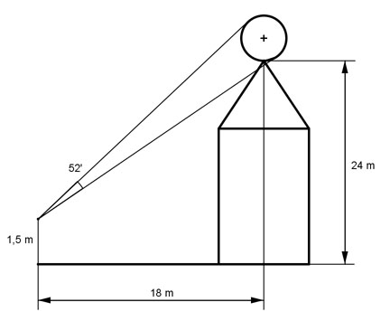
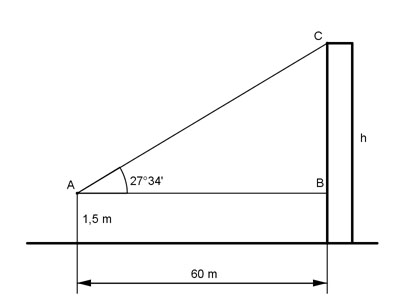
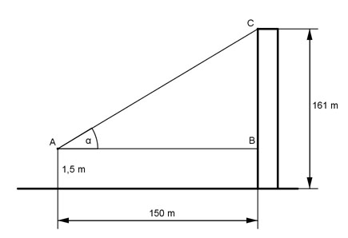
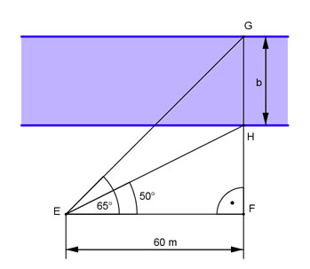
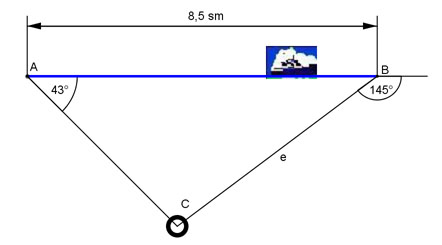
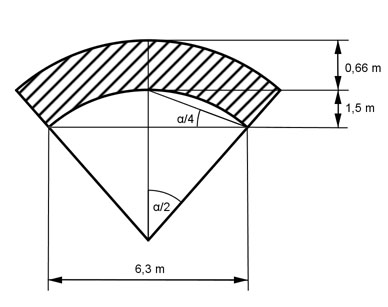
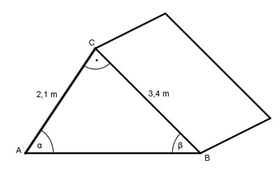

Aufgabe 67
Welche Breite b hat der Deich? Wie groß ist seine Fläche A?
Welches Volumen V hat ein Deich von 100 m Länge?

Wie löse ich Matheaufgaben?
Trigonometrie
Aufgabe 64 Wie hoch ist ein Baum, dessen Spitze aus einer Entfernung von 24,7 m unter einem Winkel von 35° anvisiert wird. h = m
Aufgabe 65 Welchen Anstellwinkel hat eine 6 m lange Leiter, deren Fußpunkt 1,5 m von der Wand entfernt ist?
Aufgabe 66 Ein Ballon befindet sich in einer Höhe von 129 m. Von dort wird ein Haus unter einem Winkel von 15° anvisiert. Wie weit ist das Haus entfernt? Entfernung = m
Aufgabe 67 Welche Breite b hat der Deich? Wie groß ist seine Fläche A? Welches Volumen V hat ein Deich von 100 m Länge?
Aufgabe 68 Der Turm ist 47 m hoch und steht schief. Er weicht um 5,5° von der Senkrechten ab. Wie groß ist der Abstand a an der Spitze?
a = m
Aufgabe 69 Der Brennerpass hat eine Steigung von 12%. Wie groß ist der durchschnittliche Steigungswinkel α?
Aufgabe 70 Wie groß ist die Kraft K, mit der der Wagen vorwärts bewegt wird? K = N
Aufgabe 71 2 Arbeiter, die eine Kraft von je 600 N aufbringen können, sollen einKlavier mit einer Gewichtskraft von 2 500 N über eine Rampe auf einen Lkw rollen, dessen Ladefläche 1,15 m hoch ist. Unter welchem Winkel α muss die Rampe angelegt werden? Welche Länge l in cm muss sie haben?
Aufgabe 72 Ein Drachen hängt an einer 43,5 m langen Schnur. Die Schnur bildet einen Winkel von 51° zum Boden. In welcher Höhe h befindet sich der Drachen? h = m
Aufgabe 73 Ein Grundstück hat die Form einer Raute, mit einer Seitenlänge a = 16,4 m und einem Winkel α = 52°. Wie groß sind die beiden Diagonalen e und f?

Aufgabe 74 Wie hoch reicht und wie lang ist eine Stehleiter, die eine Stützweite von 3,2 m und einen Öffnungswinkel von 26° hat? h = m
Aufgabe 75 Ein rechteckiger Spielplatz ist 7,7 m lang und 5 m breit. Wie lang ist seine Diagonale d und der Winkel α zwischen der Diagonale und seiner Länge?
Aufgabe 76 Zwei Türme liegen 3,8 km auseinander. Ein Flugzeug befindet sich genau über dem einen und peilt von dort den anderen unter einem Winkel von 23° an. In welcher Höhe h fliegt es? h = km
Aufgabe 77 Ein Mann ist 1,85 m groß und wirft einen Schatten von 3,1 m. Unter welchem Winkel α steht die Sonne?
Aufgabe 78 Wie hoch ist das Haus? Es sind m
Aufgabe 79 Um wieviel cm wird der Mittelpunkt des Pendels angehoben?

Aufgabe 80 Grundstück soll entlang der roten Linie unter 2 Anliegern aufgeteilt werden. Wie lang ist die Teilungslinie t, und wie groß ist die Fläche A des Grundstücks? t = m
Aufgabe 81 Die Grundfläche eines kegelförmiger Kelches hat einen Umfang von 35,2 cm. Seine Höhe beträgt 14,3 cm. Wie groß ist der Winkel α an der Spitze des Kelches?
Aufgabe 82 Ein Beobachter sieht auf Augenhöhe einen Ballon unter einem Sehwinkel von 22'. Wie weit ist er entfernt?
m
Aufgabe 83 Ein Beobachter (Augenhöhe 1,5 m) sieht unter einem Winkel von 52' auf einem Kirchturm eine Kugel, die sich in einer Höhe von 24 m befindet. Er selbst ist 18 m von der Turmmitte entfernt. Wie groß ist der Durchmesser d der Kugel? 
Aufgabe 84 Ein Haus hat ein Satteldach mit einer Breite von 9,6 m und Sparren mit einer Länge von 7,8 m, die 0,3 m überstehen. Wie groß ist der Neigungswinkel α der Sparren und die Höhe h des Daches? h = m
Aufgabe 85 Ein symmetrischer Deich ist oben 4,5 m breit. Die Böschungen sind jeweils 5,6 m lang und von oben nach unten unter 38° geneigt. Wie breit ist der Deich unten?
Aufgabe 86 Ein Baum wirft einen Schatten von 27,5 m, wobei die Sonnenstrahlen unter einem Winkel von 38° 50' einfallen. Wie hoch ist der Baum? Er ist m hoch.
Aufgabe 87 Wie groß ist die Höhe h? 
Aufgabe 88 Wie groß ist der Erhebungswinkel α?  α = °
Aufgabe 89 Wie hoch liegt A über B, wenn auf einer Karte 1 : 25 000 der Abstand AB = 18 mm beträgt?

Aufgabe 90 Wie groß sind die Neigungswinkel α und β der Dachflächen des Walmdaches und der Neigungswinkel γ der Grate?
h = cm
Aufgabe 91 Aus einer Höhe von 5,8 m sieht ein Wanderer die Spitze eines 56 m hohen Turmes unter einem Höhenwinkel von 5°40'. In welcher Entfernung e vom Turm befindet er sich, wenn sich der Turmfuß auf einer Höhe von 7,5 m befindet?
Aufgabe 92 Aus einer Höhe von 11,2 m erscheint das jenseitige Ufer eines Flusses unter einem Tiefenwinkel von 8°15'. Wie groß ist die Flussbreite b, wenn sich der Bebachter 5,5 m vom diesseitigen Ufer entfernt befindet? b = m
Aufgabe 93 Wie breit ist ein Fluss, an dessen Ufer Vermesser eine Standlinie AB von 85 m Länge abgesteckt haben und ein Punkt C, der A genau gegenüberliegt, von B aus unter einem Winkel von 53°16' angepeilt wird?
Aufgabe 94 Eine Gebirgsbahn hat auf 1 350 m Länge eine Steigung von 13,5%. Welchen Höhenunterschied h überwindet sie dabei? h = m
Aufgabe 95 Unter welchem Sehwinkel α erscheint eine 1,82 m große Person aus einer Entfernung von 6,5 m und einer Augenhöhe von 1,5 m?
Aufgabe 96 Von einem 48,5 m hohen Turm aus erscheinen die beiden Ufer eines Flusses unter den Senkungswinkeln α = 62°40' und β = 22°10'. Wie groß ist die Flussbreite b? b = m
Aufgabe 97 Ein Turm von 28,6 m Höhe steht 6 m von einem Flussufer entfernt. Von seiner Spitze aus sieht man den Fluss unter einem Sehwinkel von 16,7°. Bestimmen Sie die Flussbreite b.
Aufgabe 98 Um die Höhe h eines Kirchturms zu bestimmen, hat der Vermesser eine 65 m lange Standlinie abgesteckt, die direkt auf den Turm zuläuft. Von ihren Eckpunkten aus erscheint die Spitze unter den Höhenwinkeln α = 49°23' und β = 26°58'. Augenhöhe = 1,6 m. Wie hoch ist der Turm? h = m
Aufgabe 99 Ein Fenster liegt auf einer Höhe von 8,6 m. Von dort erscheint der Fuß eines Schornsteins unter dem Tiefenwinkel 14°20', die Spitze unter dem Höhenwinkel 56°55'. Wie hoch ist der Schornstein?
Aufgabe 100 Ein Ballon mit einem Durchmesser von 15,4 m erscheint unter einem Sehwinkel von 1,6°. Sein unterer Rand unter einem Höhenwinkel von 37°40'. In welcher Höhe h befindet er sich? h = m
Aufgabe 101 Um die Höhe h eines Kirchturmes zu bestimmen, hat derVermesser eine Standlinie von 65 m abgesteckt, die um 5,7 m ansteigt und direkt auf den Turm zuläuft. Von ihren Eckpunkten aus erscheint die Spitze unter den Höhenwinkeln α = 49°23' und β = 26°58'. Wie hoch ist der Turm?
Aufgabe 102 Ein Walmdach ist 12,4 m lang und 8,3 m breit. Die Neigung der trapezförmigen Dachflächen beträgt 35°, die der dreieckigen 50°. Wie groß ist der Neigungswinkel γ der Grate? γ = °
Aufgabe 103 Zwei Bahnstrecken schließen einen Winkel von 115° ein. Sie sollen tangential durch einen Kreisbogen verbunden werden. Die Berührpunkte liegen 480 m auseinander. Welchen Radius r hat der Bogen?
Aufgabe 104 Ein Brückenbogen hat die Form eines Kreisbogens. Er hat eine Spannweite von 21,5 m und eine Höhe von 3,45 m. Wie groß ist sein Radius r und sein Mittelpunktswinkel α? r = m
Aufgabe 105 Zwei Riemenscheiben mit den Radien 35,4 cm und 14,6 cm haben einen Mittenabstand von 1,45m. Wie lang muss der Riemen sein, wenn sich die Scheiben a) gleichsinnig bzw. b) entgegengesetzt drehen sollen?
Aufgabe 106 Eine Säule hat als Querschnitt ein regelmäßiges Fünfeck mit einem Umkreisradius von 3,5 m. Wie groß ist ihre Querschnittsfläche A? A = m2
Aufgabe 107 Wie groß ist die Querschnittsfläche A einer achteckigen Säule mit einer Seitenlänge von 1,75 m?
Aufgabe 108 Wie groß ist der Umkreisradius r einer zwölfeckigen Säule mit einer Querschnittsfläche von 62,5 m²? r = m
Aufgabe 109 Auf einen Turm ist ein Dach in der Form einer regelmäßigen sechseckigen Pyramide mit einer Grundseite von 2,8 m aufgesetzt. Ihre Seitenflächen sind unter 68° geneigt. Wie groß sind das Volumen V des Daches und die Länge s einer Seitenkante?
Aufgabe 110 Zwei Kräfte P₁ = 24,5 N und P₂ = 17,8 N stehen senkrecht aufeinander. Wie groß ist die Resultierende R und ihr Richtungswinkel α zu P₁? α = °
Aufgabe 111 Die Kraft R = 74,2 N soll so in 2 Teilkräfte zerlegt werden, dass R einen Winkel von 37,5° zu einer der senkrecht aufeinander stehenden Teilkräfte bildet. Wie groß sind die Teilkräfte?
Aufgabe 112 Ein Schiff wird vom Ufer aus mit einer Kraft von 3750 N unter einem Winkel von 15° gezogen. Wie groß ist die Kraft K, die das Schiff vorwärts bewegt? K = N
Aufgabe 113 Wie groß ist die vorwärtstreibende Kraft T der Windkraft W für das Segelboot?
Aufgabe 114 Ein Fluss ist 120 m breit und hat eine Strömungsgeschwindigkeit von 0,25 m/s. Ein Schwimmer möchte ihn so durchschwimmen, dass er am gegenüberliegenden Uferpunkt ankommt. Er schafft 100 m in 2 Minuten und 40 Sekunden in stehendem Wasser. Welchen Richtungswinkel α muss er einhalten? Welche Zeit t in s braucht er für die Durchquerung? t = s
Aufgabe 115 Betrachtet man aus einem fahrenden Zug, der 100 m in 12 Sekunden zurücklegt, Regentropfen, so scheinen die unter einem Winkel von 70° zur Senkrechten zu fallen. Welche Geschwindigkeit v haben die Tropfen?
Aufgabe 116 Von einem Punkt aus, der 75 m über dem Wasserspiegel eines Sees liegt, erscheint eine Wolke unter dem Erhebungswinkel 62,7°. Ihr Spiegelbild unter dem Tiefenwinkel 67,3°. Wie hoch steht die Wolke? Sie steht m hoch.
Aufgabe 117 Wie groß ist der Radius r des Breitenkreises, der zur geographischen Breite von 49,4° (Heidelberg ) gehört, wenn der Erdradius = 6 370 km beträgt?
Aufgabe 118 Hamburg liegt auf dem 53,5 ten Breitengrad. Berechnen Sie die Länge l des dazu gehörigen Breitenkreises, die Geschwindigkeit v von Hamburg durch die Erddrehung und die Länge b einer Winkelminute auf dem Breitenkreis. Erdradius = 6 370 km. l = km
Aufgabe 119 Die Antenne auf einem Funkhaus ist 10 m hoch und unter einem Sehwinkel von 10° zu erkennen. Um die Antennenspitze zu sehen, muss ein Beobachter seinen Blick um 30° heben (Augenhöhe vernachlässigt). Berechnen Sie die Entfernung e des Beobachters vom Turm und die Turmhöhe h.
Aufgabe 120 Wie breit ist der Fluss?  Er ist = m breit.
Aufgabe 121 Wie groß ist der Abstand e des Schiffes nach den angegebenen Peilungen vom Leuchtturm? 
Aufgabe 122 In einem Kanalrohr mit einem Durchmesser von 1 m und einer Länge von 6 m steht Wasser 80 cm hoch. Wie groß ist die Fläche A, die von Wasser benetzt ist? A = m²
Aufgabe 123 Die Bahnstrecke hat die Form eines Kreisbogens. Wie groß ist der davon überstrichene Winkel α?
Aufgabe 124 Welche Masse m hat das dargestellte 8 m lange Kellergewölbe mit einer Dichte von 2,25 kg/dm³?  m = kg
Aufgabe 125 Ein unter 28°30' verlaufender Stollen in einem Steinkohlebergwerk wird senkrecht angebohrt. Seine scheinbare Höhe beträgt 2,8 m. Wie hoch ist seine wirkliche Höhe h?
Aufgabe 126 Der Mittelpunkt des Zifferblattes einer Turmuhr befindet sich in einer Höhe von 60 m. Von einem Punkt am Boden aus erscheint er unter einem Erhebungswinkel von 42°10', der untere Rand des Zifferblattes unter einem Winkel von 41°10'. Wie groß ist der Durchmesser d des Zifferblattes? d = m
Aufgabe 127 Wie groß sind die Dachwinkel α und β? 
Aufgabe 128 Wie hoch ist das Dach, und wie lang sind die Sparren, wenn sie 40 cm überstehen? l = m
Aufgabe 129 Wie hoch steht eine Wolke, wenn sie senkrecht angestrahlt und aus einer Entfernung von 1500 m mit einem Erhebungswinkel von 47,6° angepeilt wird?
Aufgabe 130 Auf einer Flussinsel befindet sich ein Gebäude. Wie groß ist seine Entfernung e vom Ufer, wenn ein Vermesser am Ufer eine 40 m lange Standlinie abgesteckt und von deren Eckpunkten das Gebäude unter 62° und 51° angepeilt hat? e = m
Aufgabe 131 Ein Flugzeug befindet sich in einer Höhe von 32 m über einem Fluss. Welche Breite b hat der Fluss, wenn seine Ufer vom Flugzeug aus unter den Tiefenwinkeln 25,5° und 60,7° angepeilt werden?
Aufgabe 132 Eine Straße hat eine Querneigung von 2,5%, damit Regenwasser besser abfließen kann. Um wie viel mm ist sie bei einer Breite von 6,5 m am Rand angestiegen? Es sind mm
zurück